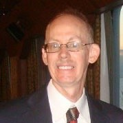

About Me
Here's a short bio of my background.
I was born in Kansas City,Misouri. When I was nine years old, my family moved to Florida. I attended elementary, Middle School,and High School there. After graduating high school, I joined the US Army. After basic training, I was stationed at Fort Bragg,NC and was eventully sent to Germany. After my enlistment, I started college, and also joined the US Army reserve. My unit was even called up to Desert Storm/Desert Shield. I eventually, finished out my 20 year enlistment in 2000.
I attended college at the University of North Floria, graduating in 1990. I worked for a defense contractor in Florida, before moving to Kansas to work for BNSF railway. I got married in 2005, and have worked for a couple of defense contractors as a E-Learning Developer.
Most recently the City of Shawnee, Kansas as a IT Web Developer Intern. The reason I am attending this bootcamp is to become a full-stack web developer. I hope to learn alot about web development including HTML, CSS, JavaScript, among others, and now the journey begins.